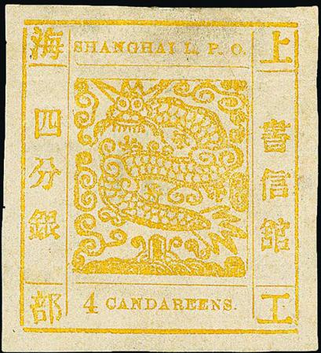

Return To Catalogue - Shanghai large dragon issues, forgeries, part 1 - Shanghai large dragon issues, forgeries, part 2- Shanghai 1866-1889 - Shanghai 1890-1893 and miscellaneous - China
Shanghai is a port in China
Note: on my website many of the
pictures can not be seen! They are of course present in the
catalogue;
contact me if you want to purchase the catalogue.
Thanks to Wolfgang Balzer for providing useful information about the forgeries of this country.
(Reduced sizes)
1 c blue 2 c black 3 c brown 4 c yellow 6 c red 6 c green 8 c green 12 c brown 12 c red 16 c red
Value of the stamps |
|||
vc = very common c = common * = not so common ** = uncommon |
*** = very uncommon R = rare RR = very rare RRR = extremely rare |
||
| Value | Unused | Used | Remarks |
| All values | RR | RR | |
A very rare misprint '6' instead of '16' CANDAREEN (the left hand
side Chinese inscription is still 'sixteen'). Ex-Ferrary.


Genuinely cancelled stamps?
There exist many types and forgeries of these stamps (20
forgeries existed already in the early 20th century according to
'Album Weeds'). Already in 1874 Dr.Magnus warns for 2 different
types of forgeries in 'Le Timbre Poste No. 134, page 16. The
English numerals in the bottom label exists in so-called
'antique' or 'ordinary' style. The value inscription exists in
'CANDAREEN' or 'CANDAREENS'. The genuine stamps should have 7
bristles in the beard of the dragon according to Album Weeds.
Note that the outer frame line is thick and broken in the
corners. The vertical and horizontal frame in the inner of the
stamp consists of of 8 thinner lines.
For forgeries, see: Shanghai large dragon
issues, forgeries, part 1 and Shanghai
large dragon issues, forgeries, part 2.


1 CANDAREEN, '1' as 'I' and '1' and yet another type of '1' in
the third image.


2 CANDAREEN and 2 CANDAREENS. Third stamp has the upper Chinese
character of the left 3 characters different (two horizontal
lines). The fourth stamp has the altered Chinese character and a
larger '2'.
3 CANDAREEN, 3 CANDAREENS and '3' different
 
4 CANDAREEN, 4 CANDAREENS, the central Chinese character on the
left hand side is totally different in these two types (second
and third stamp). The fourth stamp has a different '4'.

8 CANDAREENS, the central Chinese character on the left hand side
is totally different in these two types.


12 CANDAREENS '1' tall, '1' normal and 'I'. Fourth image with 'I'
instead of '1'.


16 CANDAREEN and 16 CANDAREENS, with different '6'
What is this, proof or forgery?
For later issues of Shanghai, (later than 1865), click here, or here.
{kind=link}